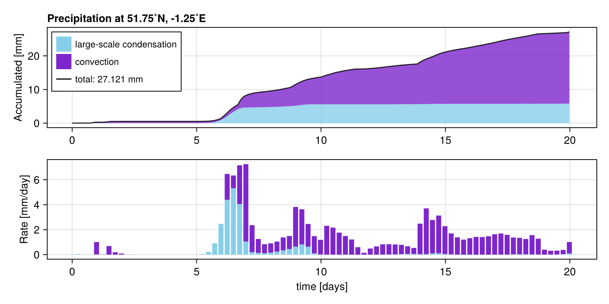
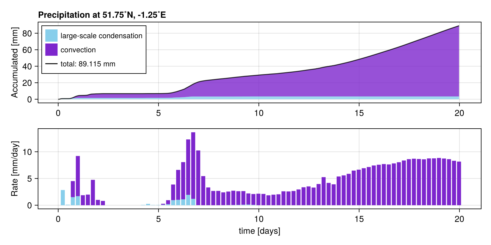

List of submissions
It follows the code and plot of the RainGauge of all RainMaker submissions to /submissions sorted in alphabetical order of the filename.
Milan: default
path: /submissions/default.jl
rank: 2. of 2 submissions
author = "Milan"
description = "default"
using SpeedyWeather, RainMaker
spectral_grid = SpectralGrid(trunc=31, nlayers=8)
model = PrimitiveWetModel(; spectral_grid)
rain_gauge = RainGauge(spectral_grid, lond=-1.25, latd=51.75)
add!(model, rain_gauge)
simulation = initialize!(model)
run!(simulation, period=Day(20))[ Info: RainGauge{Float32, AnvilInterpolator{Float32, OctahedralGaussianGrid}} callback added with key callback_4mdI
Weather is speedy: 1%|▎ | ETA: 0:00:07 (664.65 years/day)
Weather is speedy: 3%|▋ | ETA: 0:00:06 (705.99 years/day)
Weather is speedy: 5%|▉ | ETA: 0:00:06 (723.55 years/day)
Weather is speedy: 6%|█▏ | ETA: 0:00:06 (735.22 years/day)
Weather is speedy: 8%|█▌ | ETA: 0:00:06 (743.72 years/day)
Weather is speedy: 10%|█▊ | ETA: 0:00:06 (747.38 years/day)
Weather is speedy: 12%|██▏ | ETA: 0:00:06 (748.56 years/day)
Weather is speedy: 13%|██▍ | ETA: 0:00:06 (721.61 years/day)
Weather is speedy: 15%|██▊ | ETA: 0:00:06 (727.74 years/day)
Weather is speedy: 17%|███ | ETA: 0:00:05 (733.13 years/day)
Weather is speedy: 18%|███▍ | ETA: 0:00:05 (735.53 years/day)
Weather is speedy: 20%|███▋ | ETA: 0:00:05 (737.63 years/day)
Weather is speedy: 22%|████ | ETA: 0:00:05 (740.92 years/day)
Weather is speedy: 24%|████▎ | ETA: 0:00:05 (743.92 years/day)
Weather is speedy: 25%|████▋ | ETA: 0:00:05 (746.65 years/day)
Weather is speedy: 27%|████▉ | ETA: 0:00:05 (747.67 years/day)
Weather is speedy: 29%|█████▏ | ETA: 0:00:05 (747.60 years/day)
Weather is speedy: 30%|█████▌ | ETA: 0:00:04 (747.51 years/day)
Weather is speedy: 32%|█████▊ | ETA: 0:00:04 (747.34 years/day)
Weather is speedy: 34%|██████▏ | ETA: 0:00:04 (744.25 years/day)
Weather is speedy: 35%|██████▍ | ETA: 0:00:04 (735.78 years/day)
Weather is speedy: 37%|██████▋ | ETA: 0:00:04 (738.37 years/day)
Weather is speedy: 39%|███████ | ETA: 0:00:04 (739.92 years/day)
Weather is speedy: 41%|███████▎ | ETA: 0:00:04 (741.07 years/day)
Weather is speedy: 42%|███████▋ | ETA: 0:00:04 (742.50 years/day)
Weather is speedy: 44%|████████ | ETA: 0:00:04 (743.83 years/day)
Weather is speedy: 46%|████████▎ | ETA: 0:00:03 (745.33 years/day)
Weather is speedy: 48%|████████▋ | ETA: 0:00:03 (746.72 years/day)
Weather is speedy: 49%|████████▉ | ETA: 0:00:03 (747.99 years/day)
Weather is speedy: 51%|█████████▏ | ETA: 0:00:03 (745.80 years/day)
Weather is speedy: 53%|█████████▌ | ETA: 0:00:03 (745.76 years/day)
Weather is speedy: 54%|█████████▊ | ETA: 0:00:03 (745.80 years/day)
Weather is speedy: 56%|██████████▏ | ETA: 0:00:03 (745.82 years/day)
Weather is speedy: 58%|██████████▍ | ETA: 0:00:03 (745.90 years/day)
Weather is speedy: 59%|██████████▋ | ETA: 0:00:03 (742.25 years/day)
Weather is speedy: 61%|███████████ | ETA: 0:00:02 (743.47 years/day)
Weather is speedy: 63%|███████████▍ | ETA: 0:00:02 (744.41 years/day)
Weather is speedy: 65%|███████████▋ | ETA: 0:00:02 (745.25 years/day)
Weather is speedy: 66%|███████████▉ | ETA: 0:00:02 (744.64 years/day)
Weather is speedy: 68%|████████████▎ | ETA: 0:00:02 (744.30 years/day)
Weather is speedy: 70%|████████████▌ | ETA: 0:00:02 (745.26 years/day)
Weather is speedy: 72%|████████████▉ | ETA: 0:00:02 (746.20 years/day)
Weather is speedy: 73%|█████████████▎ | ETA: 0:00:02 (747.11 years/day)
Weather is speedy: 75%|█████████████▌ | ETA: 0:00:02 (747.21 years/day)
Weather is speedy: 77%|█████████████▊ | ETA: 0:00:01 (747.19 years/day)
Weather is speedy: 78%|██████████████▏ | ETA: 0:00:01 (747.21 years/day)
Weather is speedy: 80%|██████████████▍ | ETA: 0:00:01 (747.19 years/day)
Weather is speedy: 82%|██████████████▊ | ETA: 0:00:01 (747.10 years/day)
Weather is speedy: 84%|███████████████▏ | ETA: 0:00:01 (745.09 years/day)
Weather is speedy: 86%|███████████████▌ | ETA: 0:00:01 (745.64 years/day)
Weather is speedy: 88%|███████████████▊ | ETA: 0:00:01 (746.08 years/day)
Weather is speedy: 89%|████████████████▏ | ETA: 0:00:01 (746.65 years/day)
Weather is speedy: 91%|████████████████▍ | ETA: 0:00:01 (747.19 years/day)
Weather is speedy: 93%|████████████████▊ | ETA: 0:00:00 (747.89 years/day)
Weather is speedy: 95%|█████████████████ | ETA: 0:00:00 (748.57 years/day)
Weather is speedy: 96%|█████████████████▍| ETA: 0:00:00 (749.21 years/day)
Weather is speedy: 98%|█████████████████▋| ETA: 0:00:00 (749.34 years/day)
Weather is speedy: 99%|██████████████████| ETA: 0:00:00 (747.81 years/day)
Weather is speedy: 100%|██████████████████| Time: 0:00:06 (747.62 years/day)
Milan: 300K Aquaplanet
path: /submissions/aquaplanet.jl
rank: 1. of 2 submissions
author = "Milan"
description = "300K Aquaplanet"
using SpeedyWeather, RainMaker
spectral_grid = SpectralGrid(trunc=31, nlayers=8)
# define 300K aquaplanet
ocean = AquaPlanet(spectral_grid, temp_equator=300, temp_poles=300)
land_sea_mask = AquaPlanetMask(spectral_grid)
model = PrimitiveWetModel(; spectral_grid, ocean, land_sea_mask)
rain_gauge = RainGauge(spectral_grid, lond=-1.25, latd=51.75)
add!(model, rain_gauge)
simulation = initialize!(model)
run!(simulation, period=Day(20))[ Info: RainGauge{Float32, AnvilInterpolator{Float32, OctahedralGaussianGrid}} callback added with key callback_g3K7
Weather is speedy: 2%|▎ | ETA: 0:00:06 (746.59 years/day)
Weather is speedy: 3%|▋ | ETA: 0:00:06 (750.37 years/day)
Weather is speedy: 5%|▉ | ETA: 0:00:06 (755.70 years/day)
Weather is speedy: 7%|█▎ | ETA: 0:00:06 (751.73 years/day)
Weather is speedy: 8%|█▌ | ETA: 0:00:06 (752.29 years/day)
Weather is speedy: 10%|█▉ | ETA: 0:00:06 (755.67 years/day)
Weather is speedy: 12%|██▏ | ETA: 0:00:05 (758.57 years/day)
Weather is speedy: 14%|██▌ | ETA: 0:00:05 (760.17 years/day)
Weather is speedy: 15%|██▊ | ETA: 0:00:05 (757.79 years/day)
Weather is speedy: 17%|███ | ETA: 0:00:05 (756.17 years/day)
Weather is speedy: 19%|███▍ | ETA: 0:00:05 (712.70 years/day)
Weather is speedy: 20%|███▋ | ETA: 0:00:05 (717.67 years/day)
Weather is speedy: 22%|████ | ETA: 0:00:05 (719.84 years/day)
Weather is speedy: 24%|████▎ | ETA: 0:00:05 (721.82 years/day)
Weather is speedy: 25%|████▌ | ETA: 0:00:05 (723.09 years/day)
Weather is speedy: 27%|████▉ | ETA: 0:00:05 (724.17 years/day)
Weather is speedy: 29%|█████▏ | ETA: 0:00:05 (720.47 years/day)
Weather is speedy: 30%|█████▌ | ETA: 0:00:05 (720.52 years/day)
Weather is speedy: 32%|█████▊ | ETA: 0:00:04 (720.91 years/day)
Weather is speedy: 34%|██████ | ETA: 0:00:04 (721.35 years/day)
Weather is speedy: 35%|██████▍ | ETA: 0:00:04 (721.64 years/day)
Weather is speedy: 37%|██████▋ | ETA: 0:00:04 (721.88 years/day)
Weather is speedy: 39%|███████ | ETA: 0:00:04 (722.15 years/day)
Weather is speedy: 40%|███████▎ | ETA: 0:00:04 (722.21 years/day)
Weather is speedy: 42%|███████▌ | ETA: 0:00:05 (610.31 years/day)
Weather is speedy: 43%|███████▉ | ETA: 0:00:04 (615.31 years/day)
Weather is speedy: 45%|████████▏ | ETA: 0:00:04 (619.61 years/day)
Weather is speedy: 47%|████████▍ | ETA: 0:00:04 (623.65 years/day)
Weather is speedy: 48%|████████▊ | ETA: 0:00:04 (627.48 years/day)
Weather is speedy: 50%|█████████ | ETA: 0:00:04 (631.13 years/day)
Weather is speedy: 52%|█████████▍ | ETA: 0:00:04 (632.46 years/day)
Weather is speedy: 53%|█████████▋ | ETA: 0:00:03 (635.61 years/day)
Weather is speedy: 55%|█████████▉ | ETA: 0:00:03 (638.74 years/day)
Weather is speedy: 57%|██████████▎ | ETA: 0:00:03 (641.67 years/day)
Weather is speedy: 58%|██████████▌ | ETA: 0:00:03 (644.54 years/day)
Weather is speedy: 60%|██████████▉ | ETA: 0:00:03 (647.23 years/day)
Weather is speedy: 62%|███████████▏ | ETA: 0:00:03 (649.75 years/day)
Weather is speedy: 64%|███████████▍ | ETA: 0:00:03 (652.15 years/day)
Weather is speedy: 65%|███████████▊ | ETA: 0:00:03 (651.72 years/day)
Weather is speedy: 67%|████████████ | ETA: 0:00:02 (654.04 years/day)
Weather is speedy: 69%|████████████▍ | ETA: 0:00:02 (654.43 years/day)
Weather is speedy: 70%|████████████▋ | ETA: 0:00:02 (656.43 years/day)
Weather is speedy: 72%|████████████▉ | ETA: 0:00:02 (658.37 years/day)
Weather is speedy: 74%|█████████████▎ | ETA: 0:00:02 (660.25 years/day)
Weather is speedy: 75%|█████████████▌ | ETA: 0:00:02 (662.01 years/day)
Weather is speedy: 77%|█████████████▉ | ETA: 0:00:02 (662.02 years/day)
Weather is speedy: 79%|██████████████▏ | ETA: 0:00:02 (663.74 years/day)
Weather is speedy: 80%|██████████████▍ | ETA: 0:00:01 (665.35 years/day)
Weather is speedy: 82%|██████████████▊ | ETA: 0:00:01 (666.94 years/day)
Weather is speedy: 84%|███████████████ | ETA: 0:00:01 (668.23 years/day)
Weather is speedy: 85%|███████████████▍ | ETA: 0:00:01 (668.33 years/day)
Weather is speedy: 87%|███████████████▋ | ETA: 0:00:01 (668.83 years/day)
Weather is speedy: 88%|███████████████▉ | ETA: 0:00:01 (670.30 years/day)
Weather is speedy: 90%|████████████████▎ | ETA: 0:00:01 (671.56 years/day)
Weather is speedy: 92%|████████████████▌ | ETA: 0:00:01 (672.76 years/day)
Weather is speedy: 93%|████████████████▊ | ETA: 0:00:00 (673.98 years/day)
Weather is speedy: 95%|█████████████████▏| ETA: 0:00:00 (675.15 years/day)
Weather is speedy: 97%|█████████████████▍| ETA: 0:00:00 (675.41 years/day)
Weather is speedy: 98%|█████████████████▊| ETA: 0:00:00 (676.62 years/day)
Weather is speedy: 100%|██████████████████| Time: 0:00:06 (677.61 years/day)